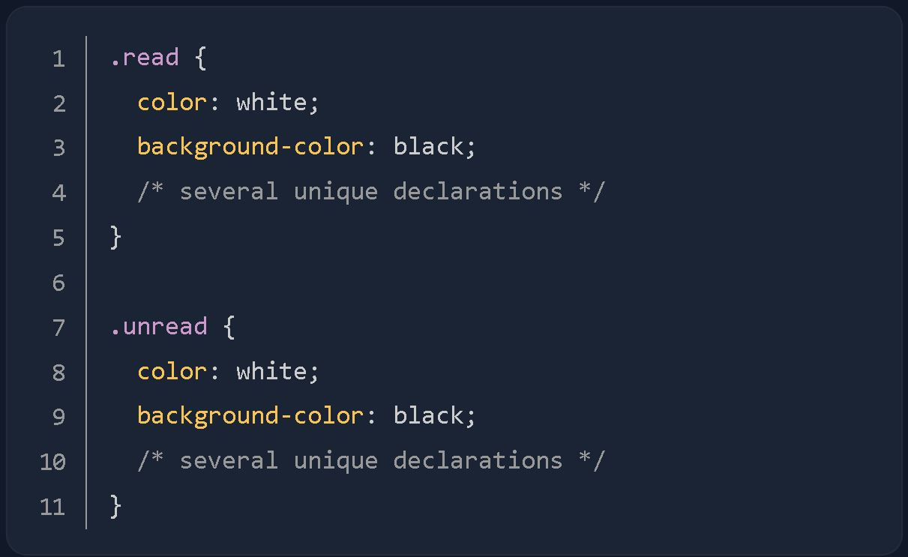
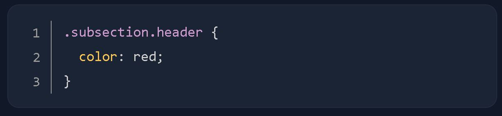

Q1. External CSS involves creating a separate file for the CSS and linking it inside of an HTML's opening and closing tags. Internal CSS involves adding the CSS within the HTML file itself instead of creating a completely separate file. Inline CSS makes it possible to add styles directly to HTML elements, though this is not recommended."
Q2. Review answer here
Q3. To apply a single rule to two different selectors, we can use Grouping Selectors.
This done by creating a separate section where two selectors are stacked on top of another. See below.

Q4. To resolve this, we can use Chaining Selectors. Chaining selectors is to chain them as a list without any separation.
e.g. We have two elements with the subsection class that has some sort of unique styles, but what if w eonly want to apply a separate rule to the element
that also has header as a second class? Well, we could chain both the class selectors together in our CSS like so:

What .subsection.header does is it selects any element that has both the subsection
and header. Notice how there isn't any space between the .subsection and .header class selectors.
This syntax basically works for chaining any combination of selectors, except for chaining more than one type selector.
Q5. Combinators allow us to combine multiple selectors differently than either grouping or chaining them, as they show a relationship between the selectors. There are four types of combinators in total. Descendant Combinator will only causeelements that match the last selector to be selected if they also have an ancestor (parent, grandparent,etc) that matches the previous selector.
Q6. Specificity will only be taken into account when an element has multiple, conflicting declariations tageting it, sort of like a tie-breaker. An ID selector will always beat any number of class selectors, a class selector will always beat any number of type selectors, and a type selector will always beat any number of anything less specific than it. When no declaration has a selector with a higher specificity, a larger amount of a single selector will beat a smaller amount of that same selector. Review answer here